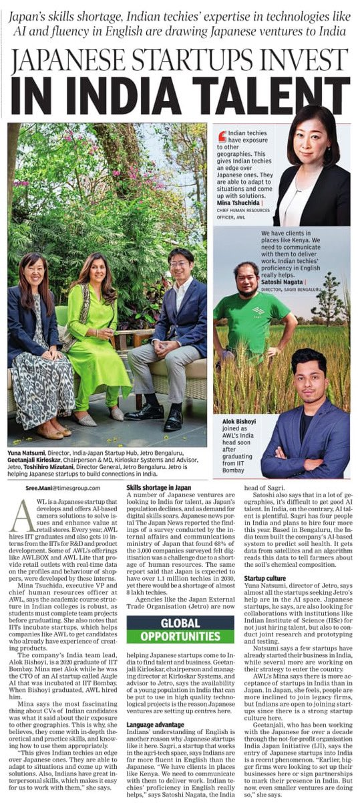

Co-founded a computer vision company while at IIT Bombay
Now an early-stage technology investor at Day Zero Ventures. Backed 12 companies—six have raised Series A, two have graduated to Series B. I look across the entire lifecycle: sourcing, due diligence, LP follow-up, and working with portfolio companies. More on investing →
Also run Indian operations for AWL, a Japanese AI company. Have seen the company grow from 30 to 100+ people. Deployed smart cameras across 10,000+ sites in Japan, Southeast Asia, and the Middle East.
Outside work: games (Age of Empires, Factorio, Cities: Skylines), MMA, Lifting, NFL, travel. Spent a quarter of 2024 in Japan. Planning US roadtrips for 2025.
I look for founders building infrastructure that enables new kinds of applications. Having built and scaled products myself, I help with product strategy and go-to-market execution.
At Day Zero Ventures, I've backed 12 companies across US Healthcare, SaaS, Energy and Consumer. Six have raised Series A, two have graduated to Series B.
Some key personal investments include Neon (acq: Databricks for $1B).
I'm particularly interested in:
- Developer tools and infrastructure
- Enterprise software / B2B SaaS
- AI/ML applications in healthcare
- Consumer applications leveraging new tech capabilities
If you're building something interesting, reach out to me at alok[at]dzero[dot]vc.
What I Learned Testing Sarvam's AI on 64 Controversial Questions
May 2025
I built a system that forces AI models to take binary positions on controversial topics. Testing this on Sarvam-M revealed it thinks like an educated urban Indian—but represents only a narrow slice of the country it's supposed to serve.
Read →
A Psychology Experiment: 20k views in <24 hours
August 2024
I built indiaincomecheck.in—a simple tool that hit 20,000 views in 24 hours. What started as a weekend project became a lesson in viral psychology and India's relationship with money.
Read →
Japanese Startups Invest in India Talent
Times of India | May 2023
Featured in Times of India's coverage of Japanese venture capital investment in Indian talent and technology companies. The article highlights the growing trend of Japanese startups looking to India for technical expertise and innovation.
